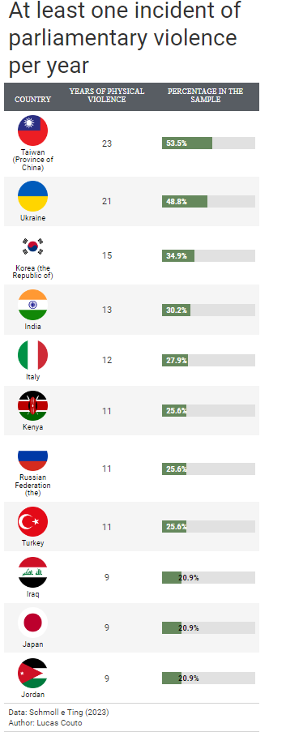
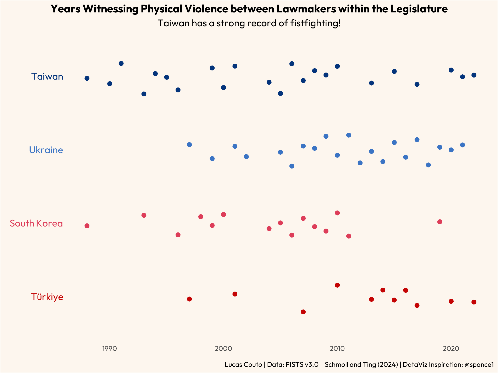

Physical Violence in Parliament: A Worldwide Perspective
Data Visualization
Legislative Studies
In this post, we visualise which countries have strong records of fistfights among parliamentarians!
Author
Lucas Couto
Published
February 27, 2024
A Busy Month
In this post, I’ll continue my saga of posting at least one visualisation related to Political Science per month this year. Usually, it should’ve gone online earlier. However, February has been pretty busy for me, so I was only able to upload it by now.
Today, we’ll take a glimpse at the third version of the FISTS, which stands for Fistfights In parliamentary Sessions Time Series. The dataset was organised and recently updated by Professors Moritz Schmoll and Wang Leung Ting, and is the cornerstone of their paper published in the Journal of Conflict Resolution.
How have I come across the data? I was basically scrolling down my feed on Bluesky when I stumbled across a post from Ting announcing a new version of the dataset. Shortly afterward, I thought that the data could provide a couple of interesting visualisations. After all, what else could be as interesting as getting to know which countries have a strong history of parliamentarians fighting one another or how common the physical violence has been in some places?
Annual Incidence of Fistfighting
The first thing I want to have a look at is which countries have most often registered at least one incident of fighting among lawmakers per year. To do so, I basically checked the variable countb.
I didn’t want to make anything fancy, and it’s been a while since I last made a table with gt. All of this led me to make a simple table. From it, we can see that Taiwan and Ukraine had a lot of years with at least one instance of fighting in parliament. As the dataset covers a period from 1980 to 2020, it is pretty remarkable to see that Taiwan had more years with at least one recorded instance of parliamentary violence than otherwise.

At least one incident of parliamentary violence per year
The Temporal Aspect of Parliamentary Fistfighting
Having done that, my second interest is to examine the distribution of parliamentary brawls over time. Looking purely at the cumulative sum of physical fights, an additional aspect has caught my attention. Despite being positioned at the bottom of the Table above, Türkiye registered as many fighting instances as South Korea, which is some positions above in the Table. Therefore, let’s see the temporal distribution of legislative violence for the top three countries in the table, along with Türkiye.
Inspired by a DataViz from Steven Ponce, I use ggbeeswarm to represent the year points with recorded instances of parliamentary violence. Typically, ggbeeswarm is employed to prevent overlapping of categorical points. Here, however, I use only for graphical purposes.

Temporal Distribution of Parliamentary Brawl
As can be seen, over the analysed timeframe, Taiwan has a fairly scattered record of violence in parliament. Ukraine, for its part, started to have more fighting from the late 1990s onwards. Interestingly, South Korea and Türkiye present contrasting patterns. While incidents of fistfighting decreased in South Korea from the late 2010s, they increased in Türkiye roughly around the same time. The upshot is that South Korea has more years with at least one reported case of parliamentary violence, whilst Türkiye has more concentrated instances of fighting per year. If you want to know better why this has happened in both countries, I strongly recommend reading Schmoll and Ting’s work on legislative violence, referenced previously. In it, they discuss some cases, such as those from South Korea and Türkiye, among others. In a brief summary, the South Korean case has to do with specific legislation aimed at producing more consensus building, while Türkiye’s is related to democratic backsliding.
Well, this is what I’ve got for this month. The code for replication is below. See you next month!
Code
Show the code
##before you proceed, you should download the data from: https://dataverse.harvard.edu/dataset.xhtml?persistentId=doi:10.7910/DVN/OBE9YJlibrary(ggbeeswarm)library(ggtext)library(gt)library(gtExtras)library(haven)library(ragg) library(showtext)library("tidylog", warn.conflicts =FALSE)library(tidyverse)#load data--fists <-read_dta("FISTSv3.0.dta")#Let's the total n for each countryfists1 <- fists %>%group_by(cname) %>%mutate(cumulative_sum =sum(count)) %>%select(cname, cumulative_sum) %>%unique() %>%ungroup()#n per yearfists_alt <- fists %>%group_by(cname) %>%mutate(cumulative_sum =sum(countb)) %>%select(cname, cumulative_sum) %>%unique() %>%ungroup()fistss <- fists %>%group_by(cname) %>%summarise(n =n()) #fontsfont_add(family ="regular", "Outfit-Regular.ttf")font_add(family ="bold", "Outfit-Bold.ttf")showtext_auto() #Table---fists_alt %>%left_join(fistss, by ="cname") %>%mutate(pct = cumulative_sum/n,pct =100* pct) %>%arrange(desc(pct)) %>%head(11) %>%mutate(img =case_when(cname =="Taiwan (Province of China)"~'https://cdn.countryflags.com/thumbs/taiwan/flag-round-250.png', cname =="Ukraine"~'https://cdn.countryflags.com/thumbs/ukraine/flag-round-250.png', cname =="Korea (the Republic of)"~"https://cdn.countryflags.com/thumbs/south-korea/flag-round-250.png", cname =="India"~'https://cdn.countryflags.com/thumbs/india/flag-round-250.png', cname =="Italy"~'https://cdn.countryflags.com/thumbs/italy/flag-round-250.png', cname =="Kenya"~'https://cdn.countryflags.com/thumbs/kenya/flag-round-250.png', cname =="Russian Federation (the)"~'https://cdn.countryflags.com/thumbs/russia/flag-round-250.png', cname =="Turkey"~'https://cdn.countryflags.com/thumbs/turkey/flag-round-250.png', cname =="Iraq"~'https://cdn.countryflags.com/thumbs/iraq/flag-round-250.png', cname =="Japan"~'https://cdn.countryflags.com/thumbs/japan/flag-round-250.png', cname =="Jordan"~'https://cdn.countryflags.com/thumbs/jordan/flag-round-250.png')) %>%select(cname, img, cumulative_sum, pct) %>%gt() %>%gt_theme_pff() %>%gt_img_rows(columns = img, height =40) %>%gt_merge_stack(col1 = img, col2 = cname, font_weight =c("bold", "normal"), small_cap =FALSE, palette =c("black", "black")) %>%gt_plt_bar_pct(pct, scaled =TRUE, labels =TRUE, fill ="#65885C") %>%cols_label(img ="Country",cumulative_sum ="Years of\n Physical Violence",pct ="Percentage in the Sample") %>%cols_width(2~px(75)) %>%cols_width(3~px(120)) %>%cols_width(4~px(140)) %>%cols_align(align ="center", columns =everything()) %>%tab_style(style =list(cell_text(align="center"), table.align="center",heading.align ="center"), locations=list(cells_body(columns =everything(),rows =everything()))) %>%tab_style(style =cell_text(font ="regular", weight ="normal"),locations =cells_column_labels(columns = gt::everything())) %>%tab_header(title ="At least one incident of parliamentary violence per year") %>%tab_source_note(html("Data: Schmoll e Ting (2023) <br> Author: Lucas Couto")) -> save1##Plot----fists2 <- fists %>%filter(cname %in%c("Taiwan (Province of China)", "Ukraine", "Korea (the Republic of)","Turkey")) %>%select(cname, year, countb) %>%filter(countb !=0) %>%group_by(cname) %>%mutate(cumulative_sum =sum(countb)) %>%ungroup() %>%mutate(cname =case_when(cname =="Taiwan (Province of China)"~"<span style='color:#04347b'>Taiwan</span>", cname =="Ukraine"~"<span style='color:#3b74c4'>Ukraine</span>", cname =="Korea (the Republic of)"~"<span style='color:#dd3d59'>South Korea</span>", cname =="Turkey"~"<span style='color:#c40404'>Türkiye</span>")) %>%mutate(cname =fct_reorder(cname, cumulative_sum)) fists2 %>%ggplot(aes(year, cname, colour = cname)) + ggbeeswarm::geom_quasirandom(shape =19,width =0.25,method ="tukeyDense", size =2) +#scale_y_discrete(labels = c("South Korea", "Ukraine", "Taiwan")) +scale_color_manual(values =c("#c40404", "#dd3d59", "#3b74c4", "#04347b")) +labs(title ="Years Witnessing Physical Violence between Lawmakers within the Legislature",subtitle ="Taiwan has a strong record of fistfighting!",x ="",y ="",caption ="Lucas Couto | Data: FISTS v3.0 - Schmoll and Ting (2024) | DataViz Inspiration: @sponce1") +theme(#Title, Subtitle, Captionplot.title =element_text(family="bold", size=40, hjust=0.5, vjust=1),plot.subtitle =element_text(family="regular", size=35, hjust=0.5, vjust=1),plot.caption =element_text(family="regular", size=25, hjust=1, vjust=1),plot.title.position ="plot",plot.caption.position ="plot",#Panel and Backgroundpanel.border=element_blank(),panel.grid.major =element_blank(),panel.grid.minor =element_blank(),panel.background =element_rect(fill ="#fdf6ee"),plot.background =element_rect(fill ="#fdf6ee"),#Axes#axis.ticks.length=unit(0.15, "cm"),axis.ticks =element_blank(),axis.line =element_blank(),#axis.title = element_text(size=45, family="regular", color="white"),axis.text.x =element_text(size =25, family ="regular"),axis.text.y =element_markdown(size=35, family="regular"),#Legendlegend.position ="none" ) -> fisting3#ggsave("ftusk.png",# plot=fisting3,# device = agg_png(width = 8, height = 6, units = "in", res = 300))